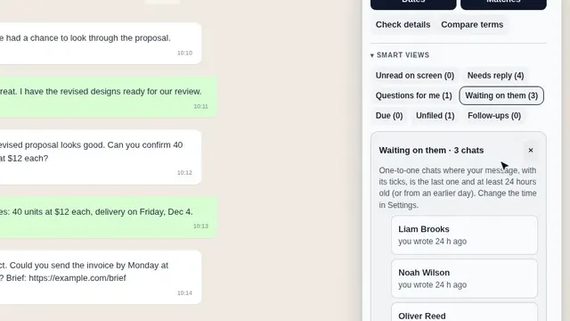
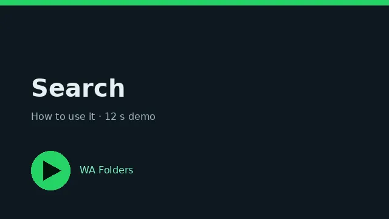
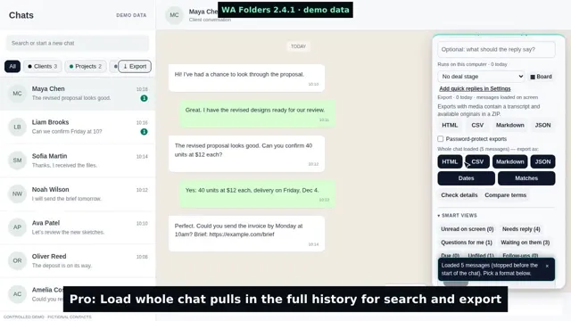
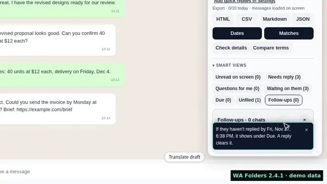
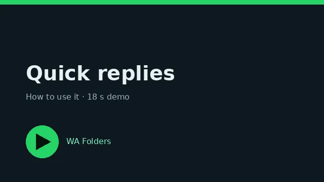
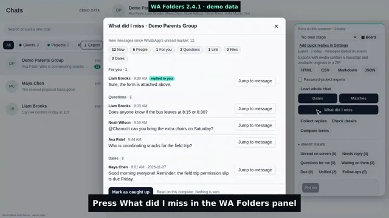
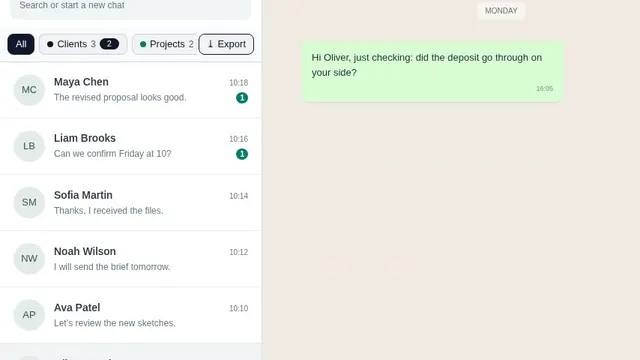
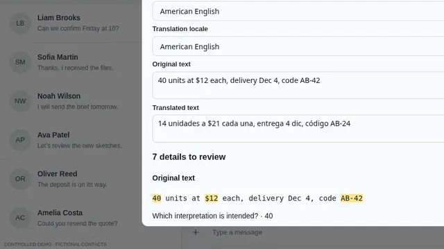
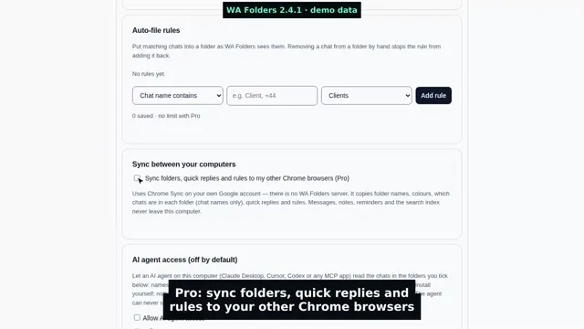

Recursos do WA Folders, com vídeo
Cada recurso tem um vídeo curto e sem som (cerca de 9 a 22 segundos), com legendas em inglês na imagem e uma faixa com legendas em português. Clique em um cartão para ver o passo a passo. Gravado na versão 2.4.1 com conversas fictícias.
Instalar no Chrome, grátis Ver o Pro
Também no Firefox e no Microsoft Edge.
Organizar

Abas de pastas
Abas de pastas acima da lista de conversas.

Responder primeiro, Perguntas para mim, Aguardando resposta
Listas de quem espera sua resposta e de quem você espera.

Regras de arquivamento automático
Regras que arquivam conversas automaticamente.
Encontrar

Buscar conversas, notas e mensagens
Busca em nomes, notas e mensagens já vistas.

Mensagens antigas e Carregar conversa inteira
Mensagens antigas na busca; Carregar conversa inteira (Pro).

Importar conversa do celular
Importe a conversa exportada do celular (.txt ou .zip).
Acompanhar

Lembretes e acompanhamentos
Lembretes e acompanhamentos que somem quando a pessoa responde.

Respostas rápidas
Respostas rápidas que preenchem a caixa de mensagem.

O que eu perdi
O que perdi no grupo: menções, perguntas, datas e links.

Resumo da manhã
Resumo da manhã: responder, aguardando, negócios e prazos.
Guardar


Rapidez

Privacidade

Vender

Quadro de negócios
Quadro de negócios: Lead, Orçado, Ganho, Pago.

Tabela de CRM e cartões de contato
Tabela de CRM e cartão de contato.

Datas para o calendário
Datas da conversa para o calendário (.ics).

Palavras de alerta
Palavras de alerta, mesmo em grupos silenciados.
Trabalho

Registro de acordos
Compare termos entre duas mensagens.

Matriz de respostas do grupo
Colete respostas do grupo em uma planilha.

Mapa de impacto de mudanças
Mapa de impacto: veja o que muda se uma data mudar.

Conferência de tradução
Verifique números e códigos em uma tradução.

Arquivos, Renomear e salvar, Criar rascunho de e-mail
Arquivos: fotos, áudios e documentos em um só lugar (Pro).
IA e idiomas

Resumir conversa e Rascunho de resposta
Resumo da conversa e rascunho de resposta com IA.
Áudios para texto e tradução
Transcrição de áudios e tradução de mensagens.

Sincronização e acesso de agentes de IA
Sincronização (Pro) e acesso para agentes de IA.
Em breve (versão 2.5)
Conversas fixadas
Fixe conversas acima da lista de pastas na sua ordem. O grátis inclui 5; o Pro não tem limite.
Filtros de pasta
Filtre uma pasta por não lidas, menções, números não salvos, respostas que você deve ou grupos.
Adiar conversa
Tira a conversa das listas do WA Folders até você trazê-la de volta. A lista do próprio WhatsApp continua mostrando a conversa. No Pro você escolhe a hora da volta; uma menção ou resposta direta pode trazê-la antes.
Responder depois
Pro: escreva a resposta agora e receba um lembrete para inseri-la depois. Você aperta Enviar.
Quadro Guardados
Guarde mensagens em um quadro local com etiquetas, marque como feitas e exporte em CSV ou Markdown. O grátis inclui 20 itens.
Instalar no Chrome, grátis Ver o Pro
Também no Firefox e no Microsoft Edge.